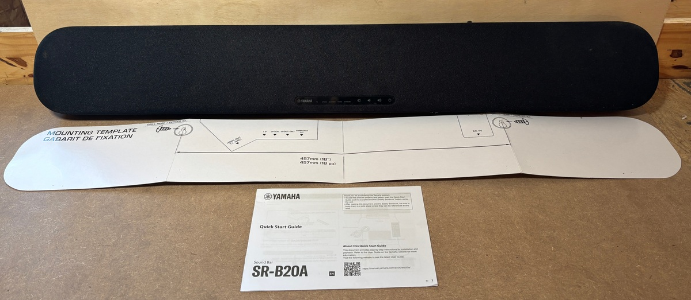
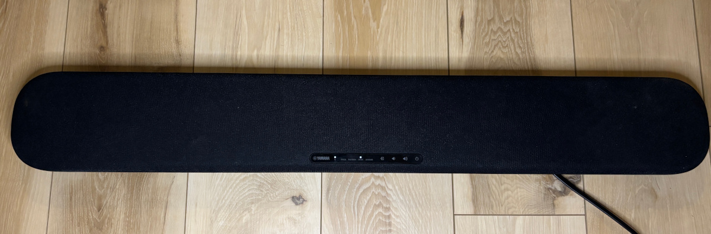
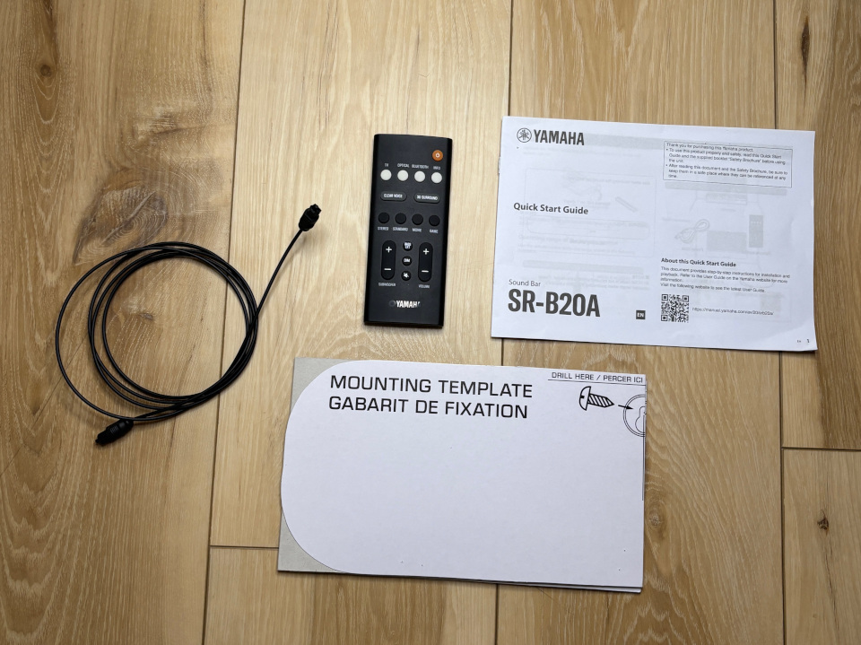

Yamaha SR-B20A.
Includes remote, optical cable, user manual, and installation template.
Idea #1: Hang on wall in your workshop, connect via bluetooth to your phone or laptop, blast tunes.
Idea #2: Hang on wall under/over TV, connect via cable to TV, blast shows.
More info:
Cash only.
 